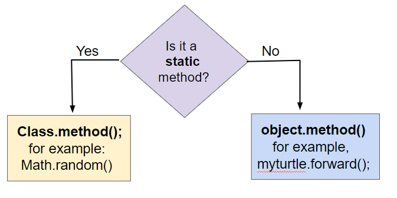
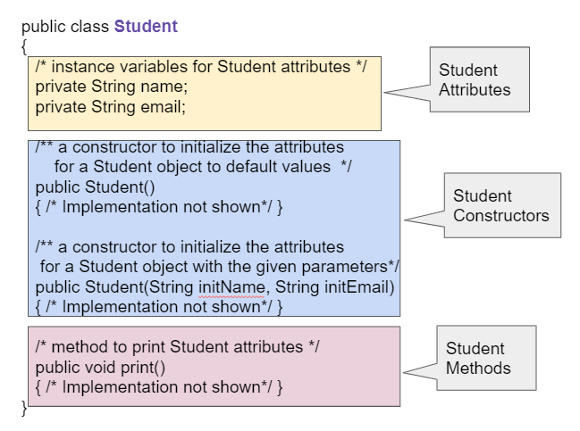
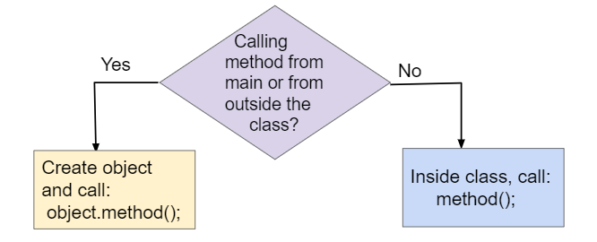
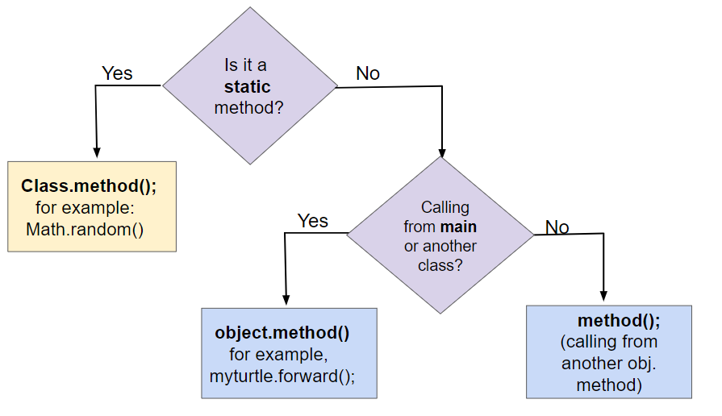

Part 1: Class Methods, Instance Methods, and Null References
In object-oriented programming, methods define the behavior and actions that an object can perform.
For example, Turtle objects can go forward or turn left using method calls like yertle.forward() and yertle.turnRight() to change its position.
These methods are sometimes called instance methods (实例方法) or object methods because they are called using an instance or object of the class.
In lessons 1.9 and 1.10, we learned how to call class methods (also called static methods).
Class methods are called using the class name followed by the dot (.) operator and the method name.
This calls the sqrt method in the Math class to find the square root of 25.
Class methods use the keyword static in their method signature. They do not access or change the attributes of an object.
In this lesson, we will learn more about instance methods, which are always called using an object of the class.
They are not static methods. They access and change the attributes of the object they are called on.
Static methods are called using the class name, for example, Math.sqrt(25);.
Instance methods are called using an object of the class, for example, yertle.forward();.
Traditionally, class names are capitalized, and object variables are lowercase.

Calling static vs. instance methods
The method signature defines the method’s name and the number and types of parameters it takes.
In a class definition or in documentation of a library, instance methods are usually defined after the instance variables (attributes) and constructors in a class.
Notice that the methods do not use the keyword static. They are instance methods that are called using an object of the class and can access and change the object’s attributes.

Student class showing instance variables, constructors, and methods
clickablearea:: student_methodsClick on the method headers (signatures) in the following class. Do not click on the constructors.
Correct method headers:
Methods follow the constructors. The method header is the first line of a method.
Do not click the class header, instance variables, constructor header, braces, assignment statements, return statement, or print statement.
object.methodName()To use an object’s method, you must use the object name and the dot (.) operator followed by the method name.
This calls yertle’s forward method to move a turtle object forward 100 pixels.
Object methods work with the attributes of the object, such as the direction the turtle is heading or its position.
Methods inside the same class can call each other using just methodName().
But to call instance methods in another class or from a main method, you must first create an object of that class and then call its methods using object.methodName().

Calling instance methods from main() or from other methods inside the same class
method(); is used to call a method within the same class.
object.method(); is necessary if you are calling the method from the main method or from a different class.
Before you call a method from main or from outside of the current class, make sure that you have created and initialized an object.
nullIf you just declare an object reference without setting it to refer to a new object, the value will be null, meaning that it doesn’t reference an object.
If you call a method on a variable whose value is null, you will get a NullPointerException error, where a pointer is another name for a reference.
activecode:: nullPointerTestRun the code below to see a NullPointerException.
Fix the code by using new Turtle(habitat) to create a new Turtle object before calling its methods.
Datafile: turtleClasses.jar
nullPointerTestRunestone checks that the code contains:
The method call should happen after yertle refers to a real Turtle object.
The following flowchart can be used to compare three different ways of calling methods.
Class (static) methods are called using the class name. Instance methods are called using an object of the class.
If you are calling the instance method from the main method or from another class, you must first create an object of that class and then call its methods using object.methodName().
If you are calling the method from within the same class, you can just call the method using methodName() which will refer to the current object.

Comparing method calls to static and instance methods
ClassName.methodName() from object.methodName()null causes NullPointerExceptionmethodName() only for a method call from within the same classPart 2 continues with methods that take arguments.